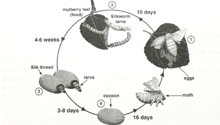

Introduction to Silk Farming
Learn all the essential steps and insights into silk farming.
1. Mulberry Cultivation
Mulberry leaves are the primary food source for silkworms. Proper cultivation ensures the best yield:
- Choose fertile, well-drained soil with pH 6.2-6.8.
- Plant high-yield, disease-resistant varieties.
- Maintain adequate spacing (e.g., 90cm x 90cm) to optimize growth.
- Regular pruning and irrigation are critical for leaf quality.
2. Silkworm Rearing
Rearing silkworms involves several crucial steps:
- Selection of Disease-Free Layings (DFLs): Always use certified silkworm eggs from trusted sources.
- Incubation: Maintain a temperature of 25-27°C with 70-80% humidity to promote uniform hatching.
- Chawki Rearing: Feed silkworms tender mulberry leaves during the first two instars (early stages).
- Late-Age Rearing: Transition to mature leaves for the final instars, ensuring a clean environment.
- Mounting: Provide bamboo trays or mounts for cocoon spinning.
3. Cocoon Harvesting
Harvest cocoons 5-7 days after spinning is complete. Avoid exposure to high humidity or direct sunlight during storage. Grade cocoons based on size, color, and density.
4. Pest and Disease Management
Maintain hygiene and use preventive measures to avoid diseases like grasserie, muscardine, and flacherie. Adopt biological controls and appropriate chemical treatments when necessary.
5. Post-Harvest Handling
Post-harvest processing is critical:
- Dry the cocoons immediately to kill pupae and preserve silk quality.
- Store dried cocoons in moisture-proof containers.
Lifecycle of Silkworm
The lifecycle of a silkworm comprises four distinct stages:
- Egg: Eggs are laid by a female moth and incubated for 10-12 days.
- Larva: Silkworm larvae feed on mulberry leaves for 20-30 days, passing through five growth stages (instars).
- Pupa: Larvae spin cocoons using silk glands, transitioning into the pupal stage inside the protective shell.
- Adult Moth: After 10-14 days, adult moths emerge, mate, and the cycle begins anew.